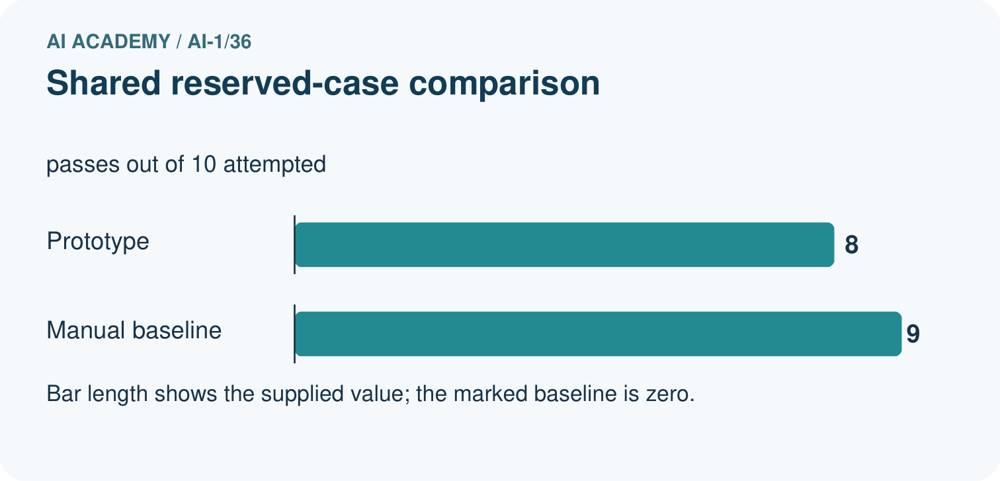
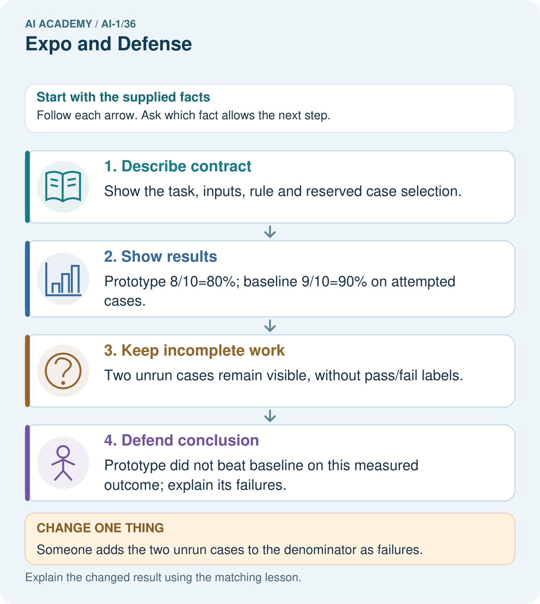
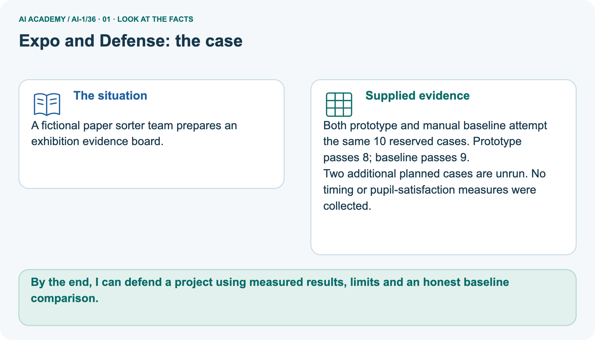
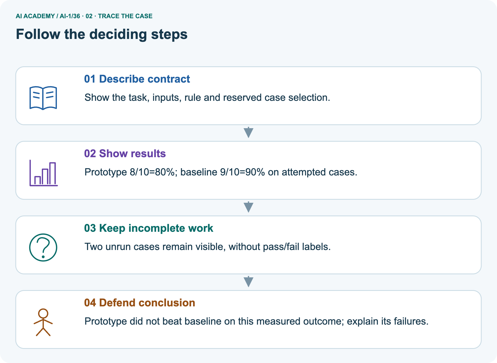
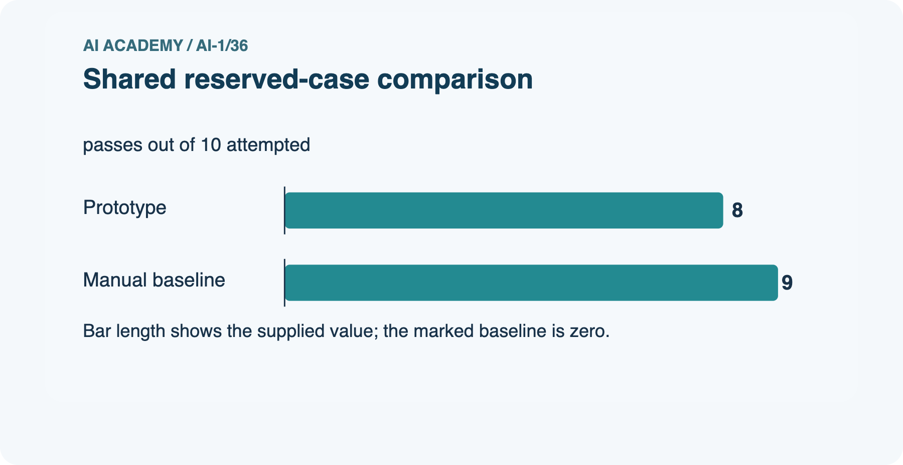
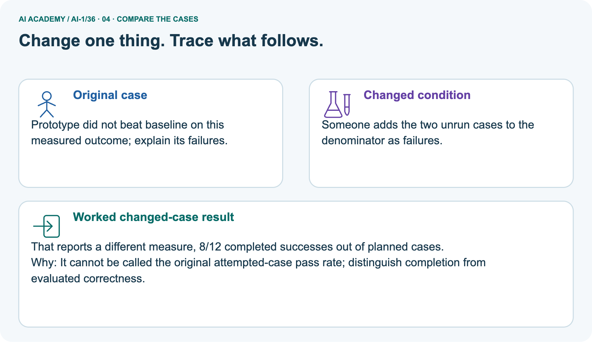
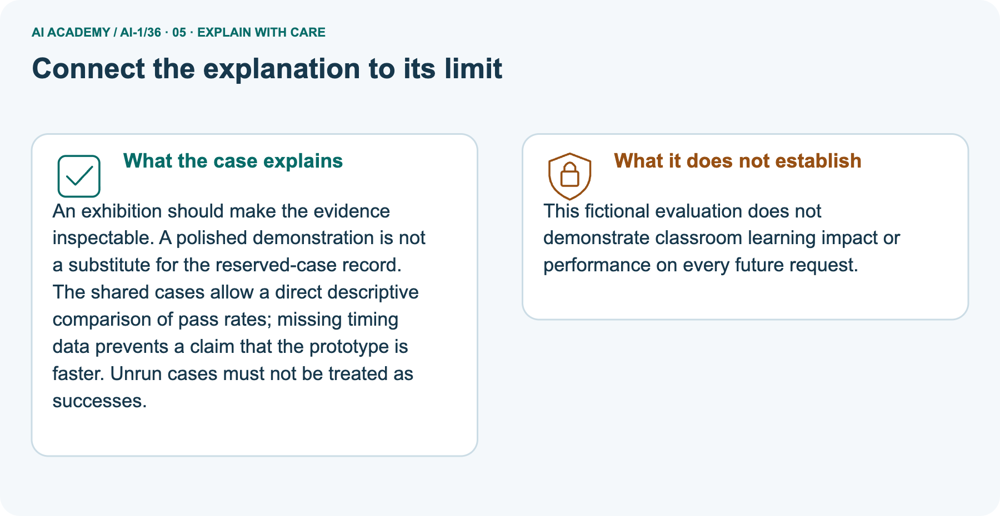
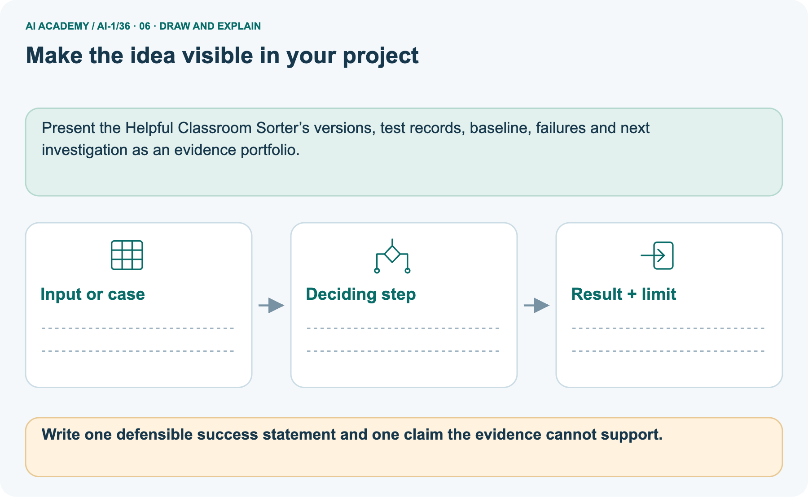

AI Academy · Level 1 · Grade 6 · Week 36 · Workbook
Expo and Defense
Learn to understand, design, build, test and explain AI systems responsibly.
Project: Helpful Classroom Sorter
Workbook · 1 of 21
Recall and choose your starting point
Record your starting explanation for Expo and Defense before opening notes. Show any later correction separately.
Try the recall before opening notes. Then use a different colour or a labelled second line to correct your explanation.
Improve One Cause
Without opening the old lesson, explain one key idea from Improve One Cause. Give an example and a mistake that the idea helps you avoid.
Test Normal Cases
Without opening the old lesson, explain one key idea from Test Normal Cases. Give an example and a mistake that the idea helps you avoid.
Choose Inputs and Outputs
Without opening the old lesson, explain one key idea from Choose Inputs and Outputs. Give an example and a mistake that the idea helps you avoid.
Workbook · 2 of 21
Practise with fading help
Complete the supported Expo and Defense trace and record the first step you can explain without help.
Use W2: Keep the final evaluation record for Evaluating and explaining your project. Record the answer once; the lesson and workbook refer to the same attempt.
| Given inputs | Procedure I chose | Middle steps | Result and check |
|---|---|---|---|
Workbook · 3 of 21
Individual reasoning check
Check the proposed Expo and Defense explanation against the supplied facts before discussing it.
Use the worked case for Evaluating and explaining your project. Proposed explanation: “A polished presentation proves the system works”. Decide whether this explanation is supported.
Point to the step or supplied fact that decides; explain your repair if needed.
Workbook · 4 of 21
Independent transfer case
Write one first attempt at the reserved independent case before feedback. Repeated copies of that case refer to the same recorded attempt.
Independent case: Judge a different project independently
A fictional library adviser and its manual baseline face the same 6 reserved cases. The candidate has 4 full passes; the baseline has 5. One additional planned case is unrun by both. No speed data was collected.
The team says “ours is faster and more reliable everywhere” and repairs it after seeing the failures. Explain what the counts support, two unsupported claims and how to label a rerun of the revealed cases.
Attempt this case before feedback. Record any help. Earlier examples below are further practice; a case already practised with feedback cannot establish fresh transfer.
Workbook · 5 of 21
Your learning target
Connect the Expo and Defense target to a trace and a justified conclusion.
Defend a sorter with 10/12 routine successes and 2/4 mixed-material successes. Report overall and separate results, show one failure and propose a justified next step. What claim would overstate the evidence?
Workbook · 6 of 21
Solve the given case
Solve the supplied Expo and Defense case and show the deciding evidence.
The expo poster says always correct after six classroom passes.
Write a defensible claim.
Show your trace, calculation or evidence
Workbook · 7 of 21
Check a changed case
Apply the procedure to the changed case and record why the conclusion follows.
At the expo, a team says our sorter never fails after testing four cards. Replace the claim with an evidence-based statement and name a next test.
My independent answer and reason
Week 36 Test and reflect
Workbook · 8 of 21
Design a revealing test
Specify a changed input, expected result and observation separately.
Create a changed input, boundary case or missing-information case. Write the expected answer or safe response before testing.
| Test record | My evidence |
|---|---|
| Changed input or condition | |
| Expected answer or fallback | |
| Observed result | |
| Why the result occurred |
Workbook · 9 of 21
Project checkpoint
Justify what Expo and Defense adds to Helpful Classroom Sorter and keep the evidence.
Present the final Classroom Sorter portfolio and complete the AI-1 certification defense.
The project change and evidence I will keep
Workbook · 10 of 21
Self check
Judge explanation, evidence, transfer and limits separately; attach the work behind your judgement.
- I can explain the mechanism.
- I can show evidence.
- I can handle a changed case.
- I can name a limit.
Mark each as not yet, with help or independently, and attach supporting work.
Teacher review ____________________ Next step ____________________
Workbook · 11 of 21
Transfer practice from the original programme
Use this earlier case as transfer practice. A case already discussed with feedback is not fresh assessment evidence.
Defend a sorter with 10/12 routine successes and 2/4 mixed-material successes. Report overall and separate results, show one failure and propose a justified next step. What claim would overstate the evidence?
Record support used: none, hint or teacher explanation.
Workbook · 12 of 21
W1 Record the fixed candidate
Record the fixed candidate. Apply the supplied Expo and Defense facts and keep your reasoning.
Before final cases are revealed, record your version label, where its complete instructions are saved, the agreed input and matching rules, the manual baseline and any known limitation.
Confirm that the instructions stay unchanged while the assigned catalogue is used as input.
Workbook · 13 of 21
W2 Keep the final evaluation record
Keep the final evaluation record. Apply the supplied Expo and Defense facts and keep your reasoning.
Use a separate sheet for the teacher’s reserved cases. For every case record its ID and inputs, catalogue and candidate labels, both methods’ observed outputs and reasons, and results after checking. Preserve failure traces.
Here summarise each method’s full passes over attempted cases and list unrun cases. State what the comparison supports.
Workbook · 14 of 21
W3 Prepare your evidence defence
Prepare your evidence defence. Apply the supplied Expo and Defense facts and keep your reasoning.
Write a two-minute explanation of the problem, one trace, your actual comparison, a limitation and a next action. Explain why this is a written-rule design rather than a model trained on examples.
State which personal information is unnecessary and who decides whether to act.
Workbook · 15 of 21
W4 Judge a different project independently
Attempt before feedback. If this repeats the selected independent case, reuse that first attempt; otherwise keep a separate record. Judge a different project independently. Apply the supplied Expo and Defense facts and keep your reasoning.
A fictional library adviser and its manual baseline face the same 6 reserved cases. The candidate has 4 full passes; the baseline has 5. One additional planned case is unrun by both. No speed data was collected.
The team says “ours is faster and more reliable everywhere” and repairs it after seeing the failures. Explain what the counts support, two unsupported claims and how to label a rerun of the revealed cases.
Workbook · 16 of 21
W5 Write your final conclusion
Write your final conclusion. Apply the supplied Expo and Defense facts and keep your reasoning.
Use your own records to complete: Under these conditions, our saved version showed… The baseline showed… We still do not know… Our next action is… Include one privacy or human-control choice.
If a case failed, explain its consequence without deleting the result.
Workbook · 17 of 21
Feedback, return check and learning record
Record the first repaired step and a different case to revisit after a delay.
| Evidence | My record |
|---|---|
| Worked alone / hint / model | |
| First step I repaired and why | |
| New case checked later; date and result | |
| What I can now explain without notes | |
| One remaining question |
Revisit this idea with your teacher after a delay. Familiarity is different from explaining and using it on a changed case.
Workbook · 18 of 21
Pictorial case practice: Expo and Defense
A fictional paper sorter team prepares an exhibition evidence board. Explain the labelled step before checking the changed condition.
A fictional paper sorter team prepares an exhibition evidence board.
Both prototype and manual baseline attempt the same 10 reserved cases. Prototype passes 8; baseline passes 9.
Two additional planned cases are unrun. No timing or pupil-satisfaction measures were collected.


Write one defensible success statement and one claim the evidence cannot support.
Record the help used
Support used: alone / hint / worked example. This record is practice evidence.
Project connection: Present the Helpful Classroom Sorter’s versions, test records, baseline, failures and next investigation as an evidence portfolio.
Workbook · 19 of 21
Project portfolio milestone
Keep this week’s input, deciding step, result and limit together in the Helpful Classroom Sorter record.
Project: Helpful Classroom Sorter
Current milestone: Present and defend. Demonstrate the system, explain one failure and justify the next improvement with evidence.
Present the Helpful Classroom Sorter’s versions, test records, baseline, failures and next investigation as an evidence portfolio.
| Evidence to keep | My record |
|---|---|
| This week’s input and deciding step | |
| Prediction and actual result (or labelled paper trace) | |
| One change since the previous checkpoint and why | |
| One error or limit and the next test |
Workbook · 20 of 21
Supported practice and learning evidence
Try the supported questions before comparing with hints and feedback. Record what you repaired and the evidence you retained.
Use this supported practice once, in the browser or on paper. Keep the reserved independent assessment for a separate first attempt before teacher feedback.
A fictional paper sorter team prepares an exhibition evidence board.
Practice 1: explain the deciding evidence
Which labelled step matches this detail? Prototype did not beat baseline on this measured outcome; explain its failures.
1. Keep incomplete work
2. Describe contract
3. Show results
4. Defend conclusion
Hint · try first
Hint if needed: Read the steps in the pictorial case. Match the supplied detail to the stage that performs or records it.
Feedback · compare after trying
After your attempt, compare with the supported explanation: Defend conclusion Prototype did not beat baseline on this measured outcome; explain its failures. An exhibition should make the evidence inspectable.
A polished demonstration is not a substitute for the reserved-case record. The shared cases allow a direct descriptive comparison of pass rates; missing timing data prevents a claim that the prototype is faster.
Unrun cases must not be treated as successes.
Practice 2: explain the deciding evidence
Changed case · predict first
Changed-case practice: Someone adds the two unrun cases to the denominator as failures. Which conclusion is supported by the supplied facts?
1. We can decide the result without examining the changed input or the procedure.
2. This one example guarantees correct results for every future input.
3. That reports a different measure, 8/12 completed successes out of planned cases.
Hint · try first
Hint if needed: Use the changed condition and the deciding step in the pictorial trace. The answer must say what follows from those facts.
Feedback · compare after trying
After your attempt, compare with the supported explanation: That reports a different measure, 8/12 completed successes out of planned cases.
It cannot be called the original attempted-case pass rate; distinguish completion from evaluated correctness.
Repair a missing building block
Review Improve One Cause (ai-1/35). Goal: Repair a located defect without changing the agreed requirements. Short practice: Explain why “our repaired version now picks something” is not enough to show success at 6..
Return to this week and explain what you changed.
Review Test Normal Cases (ai-1/33). Goal: Plan routine cases with expected results derived from the requirements. Short practice: Why is none correct for 8 but incorrect for 6? Use both capacity cards..
Return to this week and explain what you changed.
Review Choose Inputs and Outputs (ai-1/30). Goal: Turn the project outcome into precise input and output requirements. Short practice: Trace requests 10 and blank. Why should they not receive the same explanation?.
Return to this week and explain what you changed.
Keep your completed work
Use Download completed work in the hosted lesson to export your answers, reflections, practice feedback and code-run evidence. Open the HTML copy to read or print it.
Drafts stay in this browser when storage is available; clear drafts on a shared device.
Workbook · 21 of 21
Visual concept journey
Explain each Expo and Defense picture from its labels, then record a relevant limit.
01. Expo and Defense: the case

A fictional paper sorter team prepares an exhibition evidence board. Supplied facts: Both prototype and manual baseline attempt the same 10 reserved cases. Prototype passes 8; baseline passes 9.
Two additional planned cases are unrun. No timing or pupil-satisfaction measures were collected.
Point to the given fact that matters most. Explain why it matters.
02. Follow the deciding steps

Describe contract: Show the task, inputs, rule and reserved case selection. → Show results: Prototype 8/10=80%; baseline 9/10=90% on attempted cases. → Keep incomplete work: Two unrun cases remain visible, without pass/fail labels. → Defend conclusion: Prototype did not beat baseline on this measured outcome; explain its failures.
Point to each numbered stage and explain which recorded input it uses.
03. Shared reserved-case comparison

Shared reserved-case comparison. Units: passes out of 10 attempted. Prototype: 8. Manual baseline: 9.
Read the labels and values. Explain the relationship the model shows.
04. Change one thing. Trace what follows.

Original case: Prototype did not beat baseline on this measured outcome; explain its failures. Changed condition: Someone adds the two unrun cases to the denominator as failures.
Expected result: That reports a different measure, 8/12 completed successes out of planned cases. Reason: It cannot be called the original attempted-case pass rate; distinguish completion from evaluated correctness.
Predict before checking the worked changed-case result. Name what changed and what the supplied facts allow you to conclude.
05. Connect the explanation to its limit

An exhibition should make the evidence inspectable. A polished demonstration is not a substitute for the reserved-case record.
The shared cases allow a direct descriptive comparison of pass rates; missing timing data prevents a claim that the prototype is faster. Unrun cases must not be treated as successes.
Limit: This fictional evaluation does not demonstrate classroom learning impact or performance on every future request.
Explain the case, then point to a limit on the claim.
06. Make the idea visible in your project

Present the Helpful Classroom Sorter’s versions, test records, baseline, failures and next investigation as an evidence portfolio. Draw your input, deciding step, result and limit.
Supported question: Write one defensible success statement and one claim the evidence cannot support.
Draw your project trace and justify the deciding step using evidence.